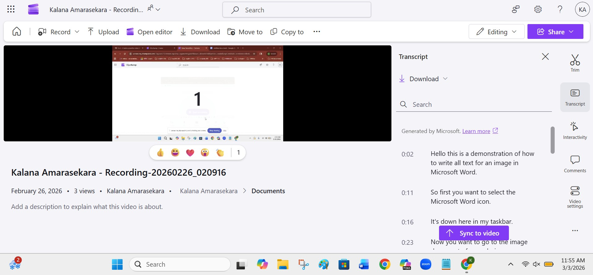

There are a couple of different options for transcribing audio in ClipChamp, which vary based on the audio source and the location of the transcript.

One method is transcribing in Word using the dictate feature.
Open a new Word document.
In the Home tab, select the dropdown menu under the Dictate icon.
Upload an audio, or select Start recording.
After your recording is uploaded, Word creates a transcript with timestamps and labeled speakers.
Select Add to document and choose to include the timestamps or speakers.
If you have already recorded audio, then you may want to use the autogeneration features in ClipChamp, although you must also remember to review the generated transcript for accuracy.
Create a video in ClipChamp.
Select Transcript from the sidebar. ClipChamp will automatically generate a transcript for your video audio.
Scroll through the transcript to check for accuracy.
To edit a section of the transcript, hover your cursor over the section and select Edit to open editing mode.
Once you have corrected the transcript, press the Enter key or select Done.

Open the Transcript tab in the sidebar.
Select Download, then choose to download as a .docx file or a .vtt file.